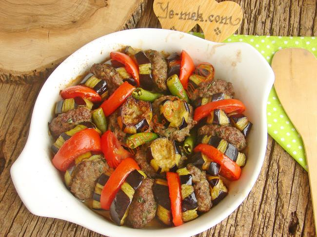
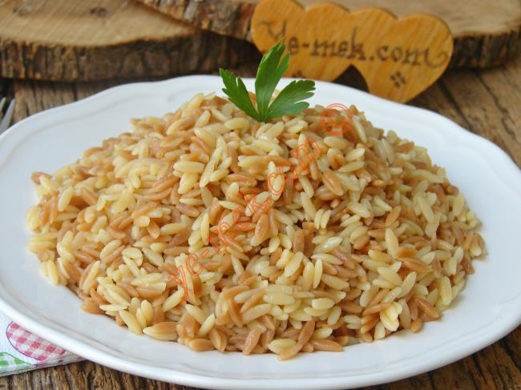
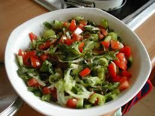
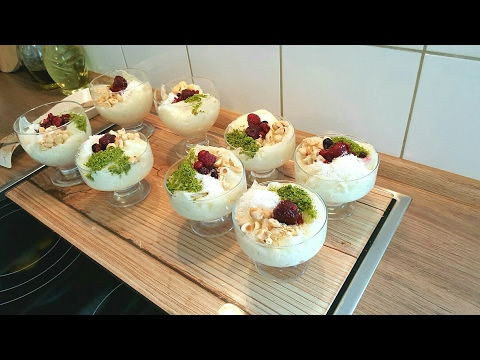

GÜNÜN MENÜSÜ
GÜNÜN ÇORBASI
Mercimek Çorbası(Zamansız Çorba)

Malzemeler
<> 1 adet soğan
<> 2 adet küçük boy havuç
<>1 adet büyük boy patates
<>2 su bardağı kırmızı mercimek
<>1 tatlı kaşığı tuz
<>½ tatlı kaşığı karabiber
<>2 yemek kaşığı tereyağ
<>1 yemek kaşığı domates salçası
<>2 yemek kaşığı zeytinyağı
<>2 litre su
Üzerindekiler
<> 2 yemek kaşığı tereyağı
<> 1 tatlı kaşığı kırmızı toz biber
Yapılışı
⚫Mercimeği bol suyla yıkayın ve süzgeçte fazla suyunu süzdürün.
⚫Derin bir tencereye tereyağı ve zeytinyağını alın.
⚫Soğanı yarım ay şeklinde doğrayıp tencereye ilave edin ve kavurmaya başlayın.
⚫Soğanlar pembeleşince domates salçasını ekleyip 2-3 dakika daha kavurun.
⚫Ardından halkalar halinde doğradığınız havuçları ve küp şeklinde doğradığınız patatesi tencereye ilave edin.
⚫Bütün sebzeleri birkaç dakika daha çevirdikten sonra mercimeği tencereye ekleyin ve suyunu ilave edin.
⚫Tuz, karabiber ayarını yaptığınız çorbanızı orta ateşte sebzeler yumuşayıncaya kadar pişirin ve el blenderinden pürüzsüz bir kıvam alıncaya kadar geçirin.
⚫Üzeri için; tereyağını tavada eritin ve toz biber ekleyip 1 dakika sonra ocaktan alı.
⚫Kaselere aldığınız çorbayı hazırladığınız tereyağlı sos ile sıcak olarak servis edin.
GÜNÜN ANA YEMEĞİ
Fırında Patlıcan Kebabı

Malzemeler
<> 3 adet büyük boy patlıcan
<> 500 gr kıyma
<> 2 adet soğan
<> Bir tutam maydonoz
<> Tuz,nane,kekik,kimyon,karabiber
<> 3 ader küçük boy domates
<> 1 su bardağı bayat ekmek
<> Kızartmak için sıvıyağ
Üzerindekiler
<> 2 adet yeşil biber
<>1 yemek kaşığı domates salçası
<>1 su bardağı sıcak su
<>1 adet rendelenmiş domates
<>1 çay kaşığı tuz
<>1 çay kaşığı karabiber
<>2 adet yeşil biber
Yapılışı
⚫Geniş bir kasede 500 gram kıymaya, 2 adet ince rendelenmiş kuru soğan, yarım demet maydanozu ilave edin.
⚫ 2 diş ezilmiş sarımsak, 1 su bardağı ekmek kırıntısı ve 1'er çay kaşığı tuz, pul biber, kimyon ve karabiber ekleyin.
⚫ Sonra güzelce yoğurun ve yumurta büyüklüğünde kopardığınız köftelere yuvarlak şekil verin.
⚫ İki parmak kalınlığında kestiğiniz 3 adet patlıcanla köfteleri birleştirin.
⚫Sırasıyla dizerek fırın kabına yerleştirin ve boş kalan yerleri kiraz domatesle doldurun.
⚫ Sosu için, ayrı bir kapta 1 yemek kaşığı domates salçasıyla 1 su bardağı sıcak suyu karıştırın.
⚫ Üzerine 1 adet rendelenmiş domates, 1 er çay kaşığı tuz, karabiber ve son olarak 2 adet doğranmış yeşil biberle 1 diş ezilmiş sarımsak ekleyip tekrar karıştırın.
⚫ Sosu ve 1 çay bardağı suyu patlıcan ve köftelerin üzerine gelecek şekilde gezdirin ve Önceden ısıtılmış 200 derece fırında 20 dakika pişirin.
⚫ Ev usulü, mis gibi fırında patlıcan kebabınız hazır.
GÜNÜN PİLAVI
İki Renkli Arpa Şehriye Pilavı

Malzemeler
<>2 su bardağı arpa
<>2 yemek kaşığı tereyağ
<>2 yemek kaşığı zeytinyağ
<>3 su bardağı kaynamış su
<> Tuz
Yapılışı
⚫Yağları ve 1 su bardağı arpa şehriyeyi tencereye koyun, yüksek ateşte sürekli karıştırarak kahverengi olana kadar kavurun.
⚫Daha sonra diğer 1 su bardağı arpa şehriyeyi ekleyip 1-2 kere karıştırın.
⚫Kaynar suyla tuzu ekleyip ateşi kısın ve şehriyeler suyu çekinceye kadar pişirin.
⚫10 dk demlendirin ve servis edin.
GÜNÜN SALATASI
Çoban Salata

Malzemeler
<>4 adet orta boy domates
<>3 adet orta boy yeşil biber
<>2 adet orta boy salatalık
<>1 adet büyük boy kuru soğan
<>1/4 demet maydanoz
<>5 yemek kaşığızeytinyağı
<>4 yemek kaşığı taze sıkılmış limon suyu
Yapılışı
⚫Çoban salatayı hazırlamak için; sap kısımlarını aldığınız sulu ve orta boy domatesleri ince ince doğrayın.
⚫Kabuğunu soyduğunuz salatalıkları domateslerle uyumlu olacak şekilde kesin.
⚫Ortadan ikiye kestiğiniz ve çekirdeklerini çıkardığınız yeşil biberleri yarım ay şeklinde kesin.
⚫Kuru soğanı küçük parçalar halinde ya da arzuya göre ince piyazlık doğrayın. Maydanozu incecik kıyın.
⚫Kuru soğan dışında kalan doğranmış tüm malzemeyi salata kabında karıştırın. Servis tabağına aldığınız salata üzerine doğranmış kuru soğanları yerleştirin.
⚫Salatanın sosu için; zeytinyağı, taze sıkılmış limon suyu ve tuzu küçük bir kapta karıştırdıktan sonra salatanın üzerine gezdirin.
⚫Sosuyla harmanladığınız salatayı, sulanmaması için bekletmeden servis edin. Her türlü ana yemek yanında sevdiklerinizle paylaşın.
GÜNÜN İÇECEĞİ
Köpüklü Susurluk Ayranı

Malzemeler
<>4 çorba kaşığı yoğurt
<>2 su bardağı su
<>2 yemek kaşığı süt
<>Tuz
Yapılışı
⚫El blendırı ile yoğurdu çırpın.
⚫İçerisine yavaş yavaş su,süt ve tuzu ekleyin.
⚫Köpürene kadar çırpın.
İşte bol köpüklü susurluk ayranı yapmak bu kadar basit!
GÜNÜN TATLISI
Kupta Güllaç

Malzemeler
<>4 adet güllaç yaprağı
<>Yarım kilo süt
<>1 su bardağı toz şeker
<>3 yemek kaşığı gül suyu
<>1 paket vanilya
<>1 küçük kase ince dövülmüş fındık
Süslemesi İçin
<>1 yemek kaşığı toz antep fıstığı
<>Hindistan cevizi
<>8-10 adet kızılcık
Yapılışı
⚫Tencereye sütü şekeri vanilyayı gül suyunu koyalım şerçe parmağımız dayanacak sütü ısıtalım.
⚫Sonra güllaç yapraklarını makasla parçalara keselim.
⚫Sonra sütle ıslayıp kuplara koyalım.
⚫Üzerine fındık koyalım. Bir miktarını ayırdığımız güllaçları tekrar sütle ıslayıp fındıkların üzerine kapatalım.
⚫Sütü çeken güllaçların üzerini toz antep fıstığı, hindistan cevizi, kızılcık taneleri süsleyelim. 1-2 saat soğuduktan sonra servis yapalım.
Bon Appétit !